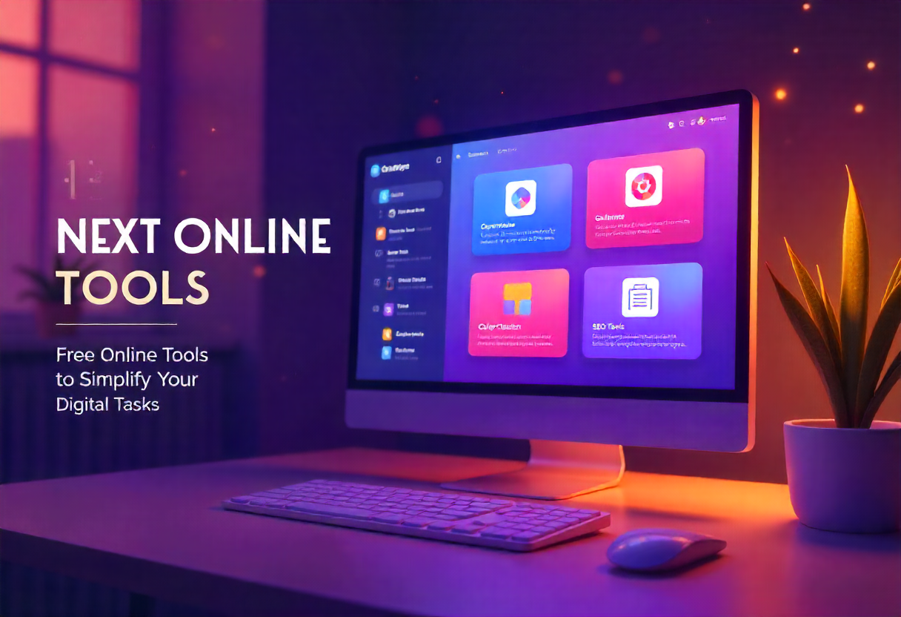

Discover the top 5 free AI tools every student should use to improve writing, research, note-taking, and productivity.
Artificial Intelligence is transforming how students learn, research, and complete assignments. With the right tools, you can save time, boost productivity, and improve your results. The best part? Many of these AI tools are completely free and easy to use directly in your browser.
1. AI Writing Assistant
An AI writing assistant helps students draft essays, correct grammar, and improve clarity. It’s perfect for brainstorming ideas and polishing academic writing.
2. AI Note-Taker & Summarizer
Turn long lectures or articles into short, easy-to-read summaries. These tools save time and make revision more effective.
3. Speech-to-Text Tool
Record lectures or voice notes and instantly convert them into text. This is ideal for students who prefer audio learning or need quick transcriptions.
4. Research Assistant & Citation Finder
AI research assistants suggest relevant sources, generate citations, and build bibliographies, making academic projects much easier.
5. Study Planner & Productivity Bot
Create AI-powered study schedules, track goals, and stay focused. Productivity bots help students manage time effectively.
By combining these free AI tools, students can work smarter, save time, and achieve better results. The future of studying is here—and it’s powered by AI.